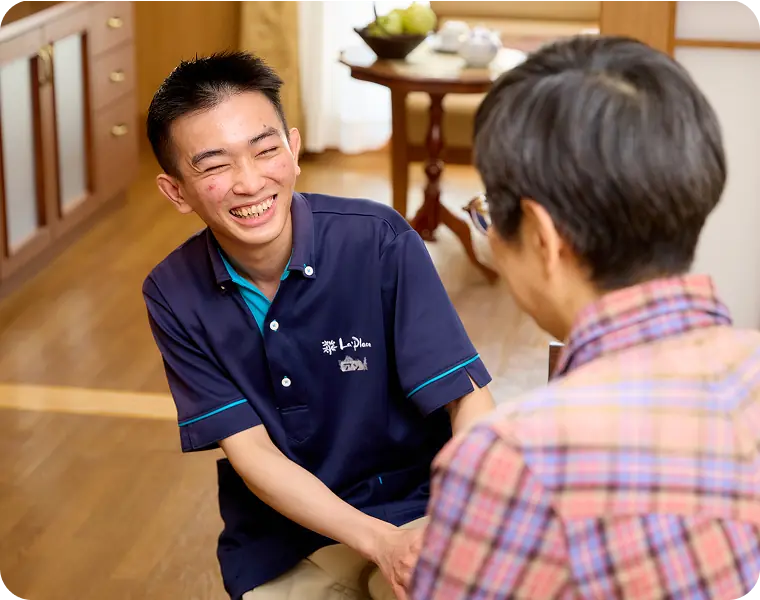

PROBLEM
外国人材の教育、現場任せになっていませんか？
採用後の日本語・介護教育・定着支援は、現場負担が大きく、属人化しやすい領域です。
-
教育が現場任せに
なっている忙しい現場の職員が教育まで担い、担当者ごとに教える内容や
方法が異なる。 -
学習が本人任せに
なっている何を、いつ、どこまで学ぶかが
本人に委ねられ、継続的な学習につながりにくい。 -
学習進捗が見えない
誰が何をどこまで学んだか把握できず、定着支援に活かしづらい。
-
入社後の育成が
続かない入社時の研修で終わり、その後の日本語・介護教育や
資格取得支援まで継続できない。
SOLUTION
日本語・介護教育・学習管理を、ひとつの仕組みに。
ASCareの教育プラットフォームは、学習者の学びやすさと、法人担当者の管理しやすさを両立します。
教育プラットフォーム
ASCare Education Platform
-
介護現場動画
移乗・食事・排泄
入浴・認知症対応など -
法定研修動画
ミャンマー語
インドネシア語対応 -
日本語学習アプリ＋
日本語テキスト継続的な
日本語学習を支援 -
生活マナー動画
生活ルール
職場マナーを学習 -
日本語
オンラインレッスン週1回、テーマに
沿った研修 -
学習管理
学習状況の
確認・管理 -
介護福祉士
受験対策アプリ将来的な資格
取得を見据えた学習
介護を学ぶ
日本語・暮らしを学ぶ
学びを管理し、成長を支える
アンバサダーSHIHO
SAKUSAKUの広報アンバサダーとして、日本語や日本の文化、日本での暮らしについて
発信していきます。趣味は着物、茶道、ゴルフ。
日本の文化が大好きなので、みなさんにも日本の面白さを
たくさん紹介していきたいと思っています。
日本語を勉強しているみなさんが、「もっと話したい！」「日本での生活が楽しくなった！」
と思えるように、一緒に日本語を楽しみましょう。
Yuk, belajar bahasa Jepang bersama! 🇯🇵✨
VALUE CHAIN
採用後の教育から定着・資格取得支援まで。
採用後に必要な教育プロセスを段階化し、法人担当者が管理しやすい形で提供します。
- 採用後教育
- 学習管理
- 定着支援
- 1日本語基礎学習アプリ・音声対応
- 2介護現場で使う日本語専門用語・現場表現
- 3動画による介護知識学習オンデマンド視聴
- 4オンライン授業週1回・講師指導
- 5学習進捗管理週1回・講師指導
- 6資格取得
定着支援介護福祉士・在留資格
-
採用後教育
- 1日本語基礎学習アプリ・音声対応
- 1介護現場で使う日本語専門用語・現場表現
-
学習管理
- 2動画による介護知識学習オンデマンド視聴
- 2オンライン授業週1回・講師指導
-
定着支援
- 3学習進捗管理週1回・講師指導
- 3資格取得・定着支援介護福祉士・在留資格
採用後教育 → 学習管理 → 定着支援の流れを、
ひとつのプラットフォームで一気通貫にサポートします。
FEATURE
プラットフォームを構成する主なサービス
-
日本語学習アプリ
サクサク日本語と連動し、音声学習にも対応。すきま時間にスマホで学べる。
-
オンラインレッスン
講師による継続学習支援。グループ授業や法人単位の運用に対応予定。
-
動画教材 / LMS
介護技術・日本生活・制度理解などをオンデマンドで学習。
-
LMS / 学習管理
法人担当者が学習状況や進捗を確認できる管理機能。
-
介護福祉士対策
資格取得・在留資格「介護」への変更まで見据えた学習支援。
-
多言語展開
インドネシア語に加え、ミャンマー・ベトナム版も展開
BENEFIT
法人導入で期待できること
教育の標準化、現場負担の軽減、定着・成長支援までを見える化します。
-
教育の属人化を防ぐ
共通教材・カリキュラムにより、
施設や担当者ごとの教育差を抑えます。 -
現場教育の負担を軽減
基礎学習をオンライン化し、
現場は実践指導に集中しやすくします。 -
学習状況を見える化
進捗を把握し、個別フォローや配置・
育成判断に活かせます。 -
定着率向上に貢献
学習・資格取得・キャリア支援を継続し、
働き続けやすい環境をつくります。
RECOMMENDED
こんな法人・事業者におすすめです
-
外国人介護人材を
受け入れている法人・施設進捗を把握し、個別フォローや
配置・育成判断に活かせます。 -
外国人材の教育支援を
充実させたい登録支援機関支援先ごとに利用者IDを発行し、複数法人の外国人材教育をまとめて管理できます。
-
紹介後の教育・定着支援まで
提供したい人材紹介事業者日本語教育と介護教育を組み合わせ、紹介後の育成支援までサービスを拡充できます。

USE CASE
導入後の利用イメージ
これまでのアナログな現場主導から、
システム化された理想的なフローへの変化を示します。
導入前
教育は現場任せ・本人任せ
- 日本語学習は本人任せ
- 教育内容が部署・担当者ごとに異なる
- 学習状況を法人が把握できない
- 入社後の教育が継続しにくい
- 資格取得まで支援できない
導入後
法人全体で育成する仕組み
- 日本語・介護教育を一元管理
- 学習状況をリアルタイムで把握
- 教育内容を標準化
- オンライン授業・動画で継続学習
- 資格取得・定着まで継続支援
PRICE
料金・プラン
法人規模・利用人数に応じた個別提案として設計します。
法人規模・利用人数に応じて最適にプランをご提案します
利用人数、オンライン授業の有無、教材・LMS・動画教材の利用範囲に応じて、最適なプランをご提案します。
初期フェーズでは問い合わせ・商談にて詳細をなお見積もり・ご案内いたします。
まずはお気軽にご相談ください
FLOW
導入までの流れ
お問い合わせからご利用開始までのステップです。
- お問い合わせフォームより
ご連絡 - ヒアリング要件・人数の
ヒアリング - ご提案・
お見積り最適プランの提示 - アカウント発行即日〜環境を
セットアップ - 学習開始スマホアプリ等で
学習スタート - 進捗確認・
継続支援管理画面と
講師でサポート
- 01
お問い合わせ
フォームよりご連絡
- 02
ヒアリング
要件・人数のヒアリング
- 03
ご提案・お見積り
最適プランの提示
- 04
アカウント発行
ID・環境をセットアップ
- 05
学習開始
スマホアプリ等で学習スタート
- 06
進捗確認・継続支援
管理画面と講師でサポート
FAQ
よくあるご質問
導入前の不安を事前に解消していただくことができます。
【ダミーテキスト】1名からご利用いただけます。法人規模や受講者数に応じて最適なプランをご提案しますので、まずはお気軽にお問い合わせください。
【ダミーテキスト】現在は介護分野向けの教材を中心に提供しています。その他の業種につきましては、教材の内容やご要望をお伺いしたうえで個別にご相談を承ります。
【ダミーテキスト】はい、スマートフォン・タブレット・パソコンのいずれからでもご利用いただけます。アプリと動画教材は、すきま時間での学習にも対応しています。
【ダミーテキスト】オンライン授業のみのご利用も可能です。学習アプリや動画教材と組み合わせたプランもございますので、目的に合わせてお選びいただけます。
【ダミーテキスト】受講者ごとの学習時間、教材の進捗、テストの結果などを確認できます。法人ご担当者様が、複数の受講者の状況をまとめて把握できる画面をご用意しています。
【ダミーテキスト】はい、法人のお客様は請求書払いに対応しています。お支払い方法の詳細は、お見積りの際にご案内いたします。
【ダミーテキスト】教材のサンプルや一部機能をお試しいただける体験をご用意しています。ご希望の際はお問い合わせフォームよりお申し込みください。
外国人材教育の仕組みづくりを、まずはご相談ください。
サービス資料、導入相談、教材サンプルの確認など、法人様の課題に合わせてご案内します。
- 導入実績50社以上
- 無料相談受付中